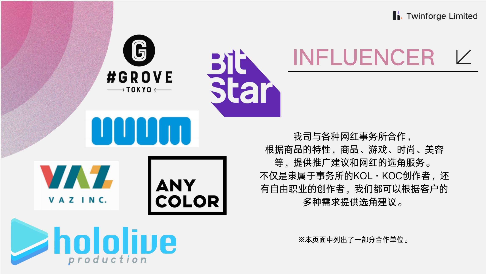

团队实力
具备海外数字营销与品牌合作经验，熟悉当地用户与媒体生态。
OVERSEAS INTEGRATED MARKETING
Twinforge Limited 是专注海外市场的整合营销伙伴。我们以本地洞察、创意内容和高效执行，连接品牌、创作者、媒体与消费者。
我们拥有丰富的海外数字营销及品牌合作经验，了解当地用户、媒体与平台生态，为品牌提供兼顾认知扩散与转化效率的本地化解决方案。
服务覆盖互联网、游戏、3C、消费品牌等多元行业，合作经验涉及米哈游、网易等品牌。我们以一对一项目管理、高效沟通与快速响应，陪伴客户把市场洞察转化为真正能落地的传播行动。
从品牌定位、内容营销和 KOL 合作，到数字广告、线下资源与影像制作，团队能够协同规划、执行与复盘，让每一次出海沟通更有价值。
具备海外数字营销与品牌合作经验，熟悉当地用户与媒体生态。
覆盖游戏、3C、消费品牌等领域，拥有多项目复合经验。
一对一项目管理，高效沟通与执行，快速响应客户需求。
CREATOR PARTNERSHIP
整合各国网红资源、创作者偏好与内容趋势，覆盖筛选、策略、商业沟通、项目执行及数据复盘的完整链路。
合作咨询 ↗BRAND AWARENESS
围绕英国、日本及其他语种市场的 SNS 与平台社区，覆盖 X、Discord、YouTube、Facebook 等渠道，规划内容策略、日常运营与创意制作，扩大品牌认知。
合作咨询 ↗LOCAL RESOURCES
对接 OOH、线下活动、游戏媒体、艺人及 Cosplayer 等创意人才合作，以及新闻稿、Banner 采购和媒体关系维护，形成多维传播组合。
合作咨询 ↗VIDEO & CONTENT
提供 WebCM、UA 短视频、Web 综艺等内容的创意策划、拍摄制作与后期支持，适配不同媒介和投放场景。
合作咨询 ↗长期耕耘海外市场，让我们能将品牌策略准确转化为更自然、更有效的当地沟通。
多语言人才覆盖英语、日语、中文、韩语、俄语、德语及西班牙语，降低跨市场沟通成本。
长期关注日本、欧美、东南亚等市场，熟悉本地用户、内容平台与媒介语境。
从 SNS 运营、数字广告到插画师、达人、活动及合作企划，以多维度方式推动品牌认知扩散。
结合品牌定位、市场洞察与本地化运营经验，提供从创意企划到交付复盘的一站式支持。
我们持续拓展各国 MCN 与全球 KOL 的直联资源，并在日本市场积累了线下 OOH、游戏媒体、艺人事务所和本土拍摄团队等合作网络。

合作网络涵盖事务所所属 KOL / KOC 与自由创作者，可按商品、游戏、时尚、美容等不同需求提供合适的选角与推广建议。图中仅展示部分合作单位。
以下展示的是我们可支持的典型传播场景与行业案例方向；具体项目以客户授权及实际合作方案为准。
面向游戏、二次元、消费品牌等品类，结合创作者影响力、内容偏好和市场语境，设计 KOL / KOC 协作节奏；行业观察可参考《COA》《原神》等内容生态。
↗整合近期城市地标、线下活动与本地媒体资源，让线上话题与线下可见度形成连续的品牌记忆。
↗围绕周年节点、角色合作、真人出镜与策略型产品传播，完成 WebCM、UA 短视频及系列内容制作；可延展至《放置少女》周年、Efun《ゆうゆう機空団》及《三国志·战略版》一类内容方向。
↗LET'S BUILD WHAT'S NEXT
告诉我们您的品牌与目标市场，让 Twinforge 为您找到更适合的海外传播与增长路径。
香港灣仔駱克道300號浙江興業大廈12楼A室
FLAT/RM A 12/F ZJ 300, 300 LOCKHART ROAD, WAN CHAI, HONG KONG